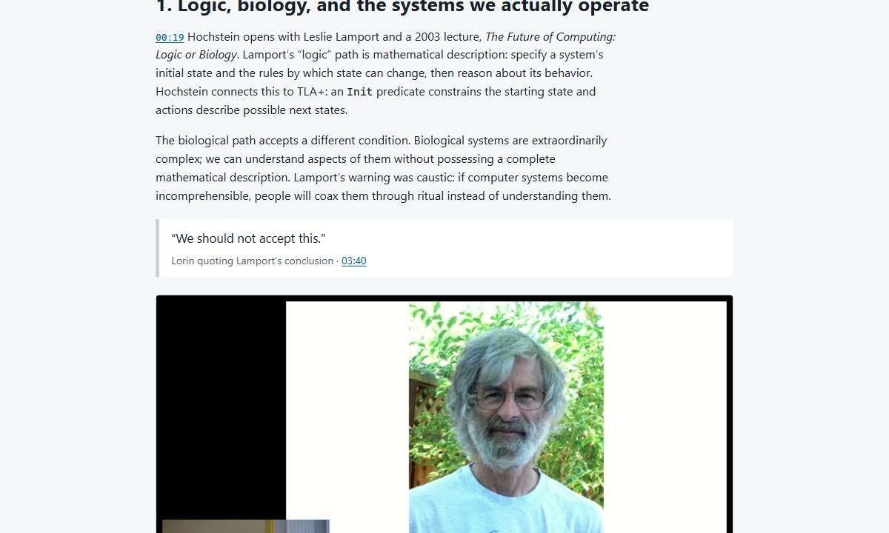
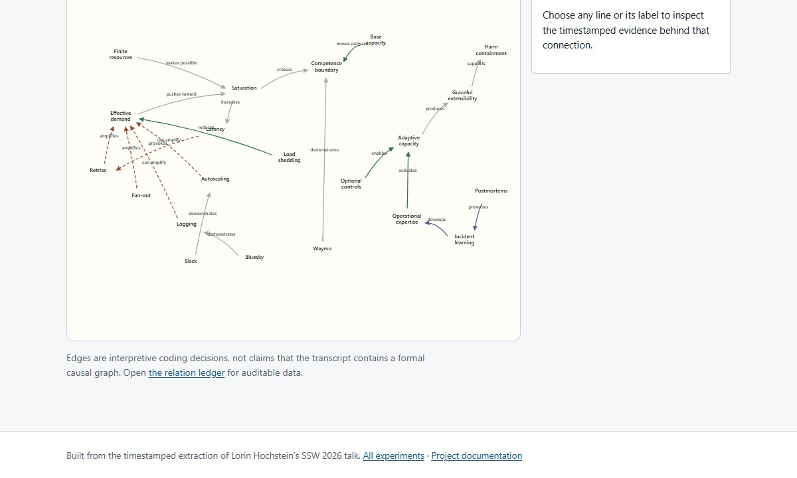
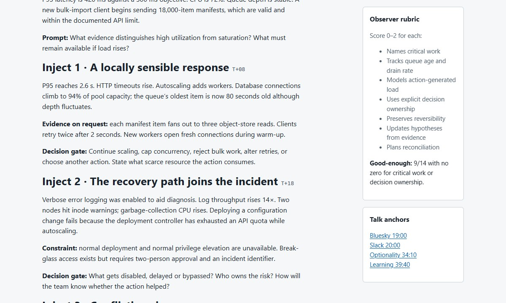
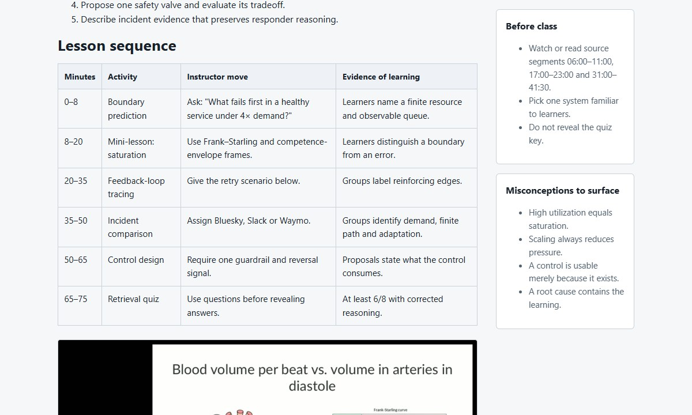
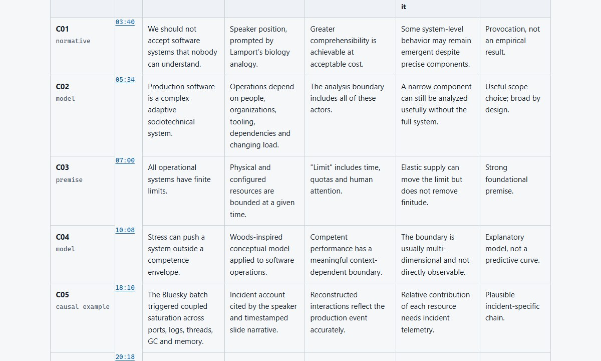
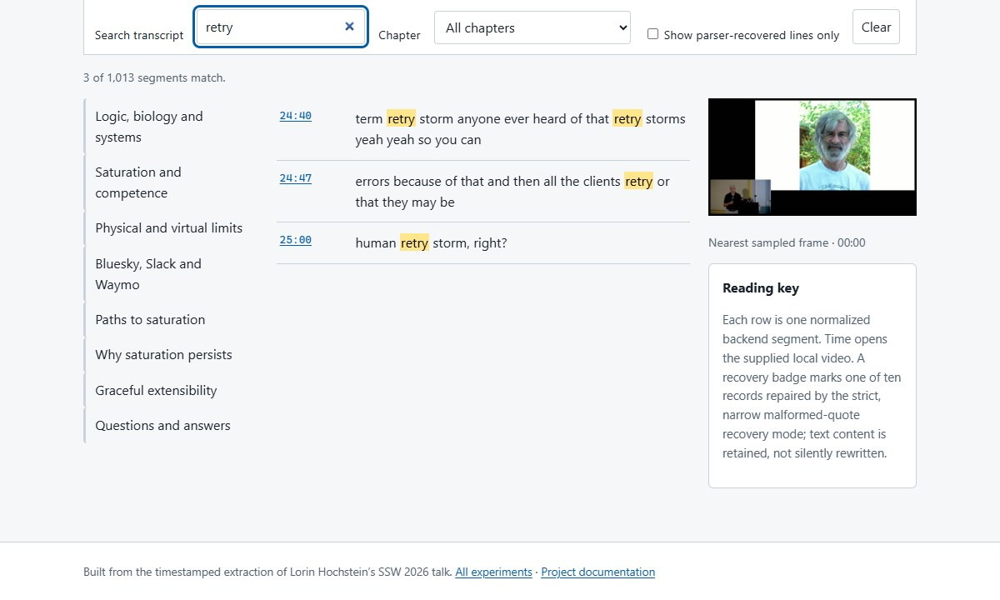

What the project does
Transcript Organizer runs an FFmpeg build containing the Whisper filter through a typed PowerShell interface. It checks the Windows runtime, executable capabilities, input media, model, output path, GPU policy, timeout, and result contract before it treats a transcription as successful.
Each run performs one internal JSON transcription and writes a reusable output folder containing raw and normalized timestamped evidence, readable text, SRT subtitles, media metadata, sampled frames, hashes, provenance, and validation.
| Release | Distribution version 001; PowerShell module version 0.0.1 |
|---|---|
| Platform | Windows 10 or 11, x64 |
| Runtime | PowerShell 7 and FFmpeg with the whisper filter |
| Inputs | Local speech-bearing audio or video files |
| Outputs | One output folder with JSON evidence, readable text, SRT subtitles, metadata, validation, and sampled frames |
| Execution | GPU preferred, at most one classified CPU fallback, sequential requests |
Quick start
- Download the distribution ZIP and extract it to a writable directory.
- Install PowerShell 7 and an FFmpeg build containing the Whisper filter.
- Place
ggml-model-whisper-medium.en-q5_0.binin the extracted project directory or itsmodelssubdirectory. - Copy a speech-bearing file such as
video.webminto that directory. - Open PowerShell 7 in the directory and run the video file as the first argument.
pwsh -File .\Invoke-TranscriptOrganizer.ps1 '.\video.webm'Preview the resolved backend, model, output folder, media duration, timeout, and execution plan without starting inference:
pwsh -File .\Invoke-TranscriptOrganizer.ps1 '.\video.webm' -DryRunvideo-transcript folder contains raw JSON Lines, readable text, SRT subtitles, metadata, validation, and sampled frames. A repeated run creates video-transcript_001. Recognition is probabilistic; review important wording against the recording.The launcher automatically examines project-local, WinGet, PATH, and Program Files candidates and selects a paired FFmpeg/FFprobe installation with the Whisper filter. For an authoritative custom installation, edit FFmpegPath and FFprobePath in the script’s user-editable settings block.
See the first-transcription manual for the module API, configuration object, model setup, VAD, CPU-only mode, batching, and troubleshooting.
Download a source video with yt-dlp
If you are authorized to download the source, yt-dlp can save it with a filesystem-safe name. Replace <VIDEO_URL> with the actual page URL.
yt-dlp.exe -o "%(title)s.%(ext)s" --restrict-filenames "<VIDEO_URL>"The downloaded file appears in the current directory. Use its exact filename as InputPath. Download only material you have permission to access and process.
Generated outputs
| Artifact | Purpose |
|---|---|
transcript.raw.jsonl | Byte-preserved FFmpeg Whisper output used as the source record. |
transcript.segments.json | Normalized timestamps, text, source lines, and parser-recovery provenance. |
transcript.txt | Readable transcript suitable for review and search. |
transcript.srt | Timestamped subtitles derived without another inference run. |
media-metadata.json | FFprobe media and stream metadata. |
frames/ and visual-index.json | Bounded, timestamp-related source frames for visual review. |
corpus-manifest.json | Inputs, hashes, backend information, and artifact inventory. |
validation-report.json | Ordering, coverage, gaps, overlaps, frame count, and recovery evidence. |
To produce a complete corpus through the module API:
$manifest = '.\module\TranscriptOrganizer.psd1'
Import-Module $manifest -Force
$configuration = New-TranscriptOrganizerConfiguration -ProjectDirectory $PWD
Export-TranscriptOrganizerCorpus -InputPath '.\video.webm' -OutputFolder '.\video-transcript' -Configuration $configurationValidated production result
The supplied 50-minute conference recording was used as a full field test on the documented Windows target machine. The run used the explicit FFmpeg 8.1.2 backend and one GPU attempt. No CPU fallback or retranscription was required.
| Media | 50:54 duration |
| Processing | Approximately 53 minutes 21 seconds on the GTX 1050 Ti |
| Transcript | 1,013 normalized segments |
| Visual source | 51 sampled frames |
| Endpoint coverage | 99.93% |
| Backend recovery | 10 malformed quotation-bearing JSON records recovered under the explicit exact-record policy |
| Automated verification | 55/55 Pester, 286/286 experiment, 110/110 landing-page, and 103/103 distribution checks passed |
Reusable coding-agent skills
Three successful field workflows were distilled into dated, self-contained SKILL.md prompts. Each skill documents the complete extraction-folder structure and can start from an arbitrary validated video corpus without reading this talk or another experiment.
| Origin | Skill | Reusable outcome |
|---|---|---|
| Experiment 01 | Create a Faithful Video Companion | A detailed source-only illustrated HTML article. |
| Experiment 02 | Build a Researched Video Field Guide | A primary-source-enriched guide with explicit claim boundaries. |
| Experiment 10 | Build a Searchable Transcript Navigator | A dependency-free interface exposing every timestamped segment. |
Generated report examples
These screenshots were captured from the actual local HTML outputs after the shared documentation style was applied. They are not mockups.






Experiment results
Every workflow begins independently from the shared extraction corpus. Experiments do not inherit prose, design decisions, evidence selections, or conclusions from one another.
Faithful illustrated talk companion
Tested whether the corpus alone could support a complete technical article.
Result: a detailed source-only companion covering the prepared talk and material Q&A with eight local frames. Reusable skill.
Primary-source researched field guide
Tested whether external research could add depth without obscuring the talk.
Result: a field guide using ten primary or authoritative sources with report, claim, and inference boundaries preserved. Reusable skill.
Interactive concept map
Tested whether linear transcript evidence could become an inspectable systems model.
Result: 20 editable timestamp-audited relations across limits, feedback, controls, expertise, and learning.
Saturation tabletop workshop
Tested whether the talk’s mechanisms could support team practice.
Result: a 95-minute scenario with five injects, decision gates, observer rubric, debrief, and worksheet.
Saturation response runbook
Tested whether conceptual material could become an operational incident workflow.
Result: a detect, diagnose, contain, and recover process with guardrails and service-specific decision gates.
75-minute teaching kit
Tested whether the source could support instruction beyond slogan recall.
Result: objectives, timed activities, exercises, misconception checks, quiz, and a separate answer key.
Engineering leadership brief
Tested whether mechanisms could be reframed as allocation decisions and evidence requests.
Result: a compact decision brief and six prompts ready for a leadership review.
Skeptical claim audit
Tested the talk as an argument to interrogate rather than a set of facts to repeat.
Result: 13 claims classified by support, assumptions, challenges, and bounded verdicts in HTML and CSV.
Multi-surface publishing kit
Tested whether one source could yield distinct editorial formats without quote drift.
Result: newsletter copy, five short posts, two contextual image cards, and an editorial risk checklist.
Full transcript navigator
Tested whether every normalized segment could remain directly inspectable without a server.
Result: local search, eight chapters, recovery-provenance filtering, frames, and timestamp links for all 1,013 segments. Reusable skill.
Open the experiment collection for the compact catalog and clean-room protocol.